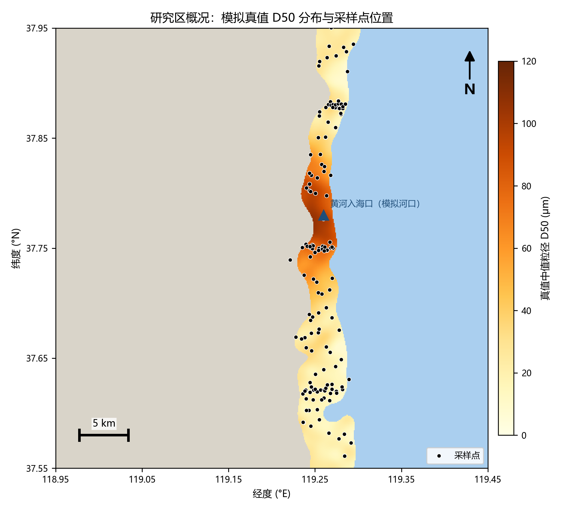
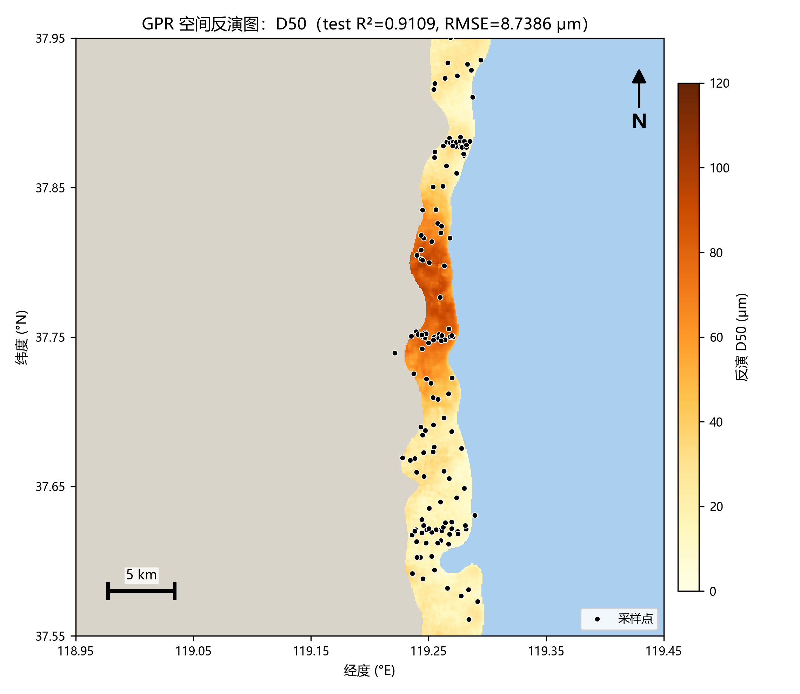
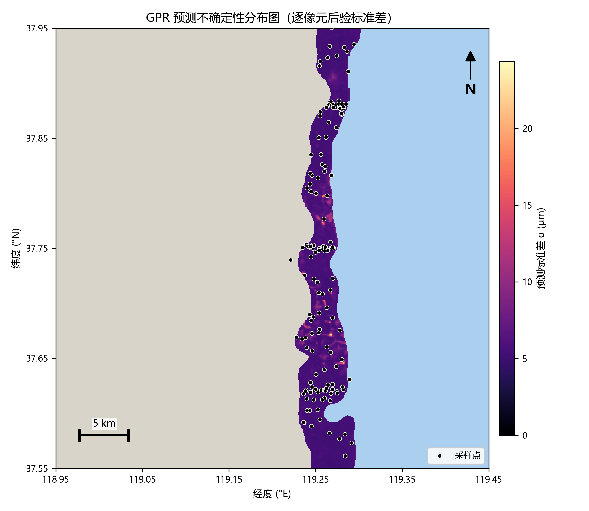
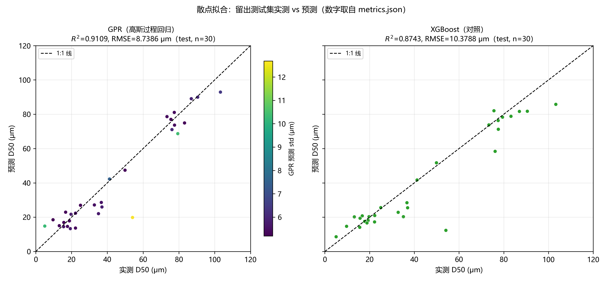
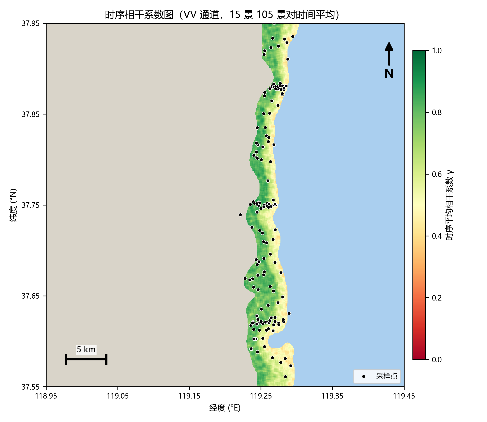
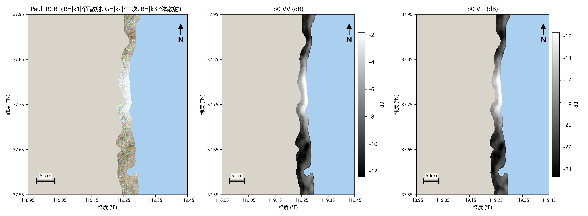
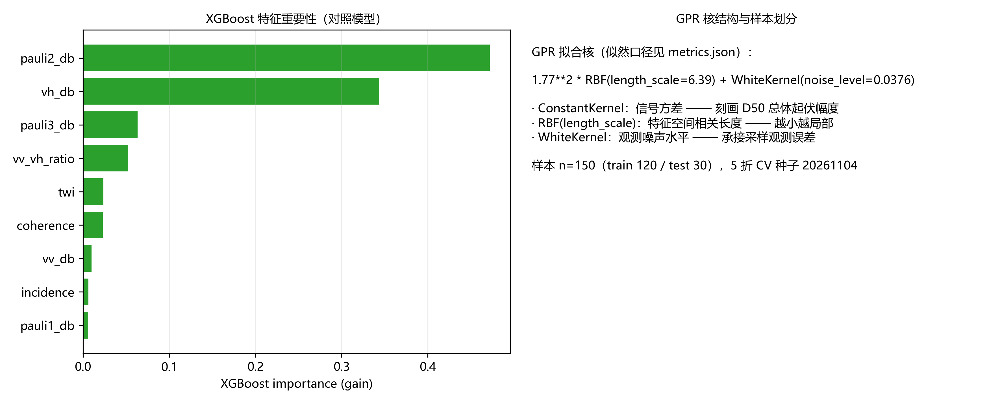
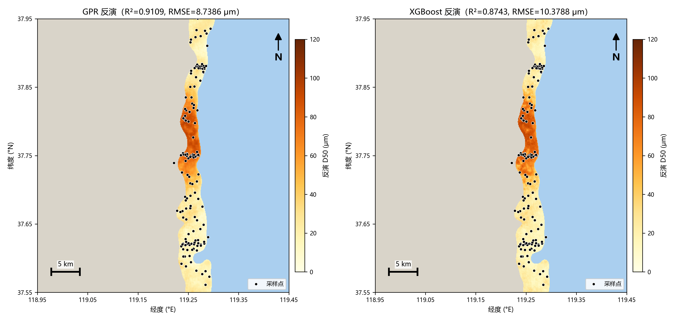
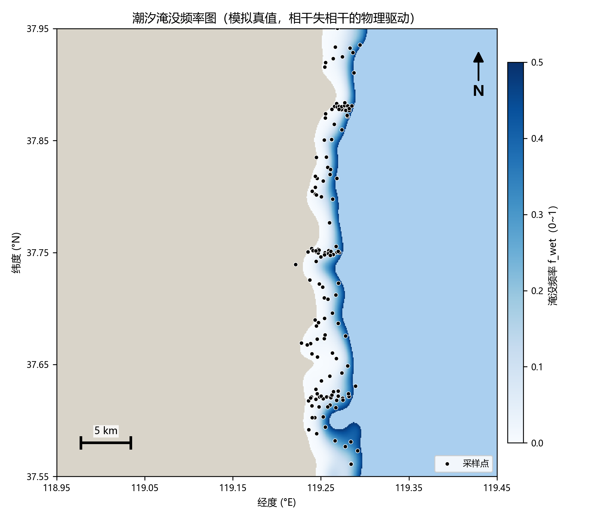

遥感作品集 · REMOTE SENSING PORTFOLIO
Sentinel-1 时序相干 + 极化特征反演潮滩沉积物粒度
高斯过程回归（均值 + 逐点预测不确定性） · 黄河三角洲—莱州湾潮滩 · XGBoost 对照 · GRD 预处理链全自实现
Python 3.13
scikit-learn GPR
xgboost 3.4
Lee Sigma 滤波自实现 · 不调 SNAP
时序相干 105 景对自估
带真值评估 · seed=20261104 逐位复现
23 项自动化测试全绿
8.74 μm
RMSE（XGBoost 对照 10.38）
一、研究立意：把潮汐失相干从"麻烦"反转为"信息"
潮滩沉积物粒度（D50 与砂/粉砂/黏土占比）是海岸冲淤演变与湿地演替研究的物质基础。
光学遥感受云雨与潮位制约，C 波段 SAR 全天候成像，但时序分析的老大难是潮汐淹没引起的失相干——
淹没抹平并重组滩面，前后两景复相干大幅下降。本研究把这一机制反转为信息源：
淹没频率受高程控制，高程又与粒度分带耦合（高滩暴露粗化、低滩细化），
因此时序相干系数本身就是粒度的指示器：模拟中高滩中位相干 0.798、低滩 0.469，相干与淹没频率 r=−0.921。
相干（淹没历史）、极化（粗糙度）、TWI（地形）三者构成反演的物理三角。
S1 GRD 时序15 景 VV+VH
DN + 定标/噪声 LUT
→
热噪声去除NESZ 跨轨 LUT
功率域扣除
→
辐射定标σ⁰VV / σ⁰VH
跨轨 LUT
→
Lee Sigma ★自实现 sigma 范围选点
ENL 4.3 → 8+
→
地形校正真实 SRTM DEM
局部入射角改正
→
时序相干 ★VV 通道 105 景对
5×5 窗复相干估计
→
GPR ∥ XGBoost均值 + 后验 std
增益重要性对照
→
反演图 / 不确定性空间图带比例尺
指北针、图例
为什么用 GPR：潮滩采样天然稀疏，模型必须回答"这个像元的预测有多可信"。
GPR 是贝叶斯非参模型，天然输出逐点后验标准差——特征空间密集处预测紧致、外推区自动放大。
本项目不确定性经校准检验：95% 置信覆盖率 93.3%（名义 95%），GPR 拟合出的 White 噪声项
（0.0376）与采样观测误差设定（σ=4 μm）量级自洽；散点图中预测最差的样本恰被高 std 标记——
不确定性图直接就是下一航次的采样建议图。
二、结果图（全部 300 dpi，空间图含图例/比例尺/指北针）

图 1 · 研究区概况。模拟真值 D50：黄河入海口（模拟河口）粗粒叶瓣向海凸出，
南北两侧细粒低滩，滩面淹没频率 0~0.49；150 个采样点（3 条垂直岸线剖面 51 点 + 滩面随机 99 点）。

图 2 · GPR 空间反演图（D50）。test R²=0.9109、RMSE=8.7386 μm；
忠实重现真值的河口粗源格局并带核方法固有的平滑性。

图 3 · 预测不确定性分布图（逐像元后验标准差）。高 σ 集中在河口粗-细过渡带
与南部滩面——正是特征空间采样稀疏的位置，与"主动学习补采样"思路直接衔接。

图 4 · 散点拟合（留出测试集真实预测，n=30）。左：GPR，颜色=预测 std——
最大残差点（实测 50 μm）恰被最高 std（黄色）标记，不确定性输出"知道自己不知道"；
右：XGBoost 对照，R²=0.8743、RMSE=10.38 μm，外推点偏差更大。

图 5 · 时序平均相干系数图（VV 通道，15 景 105 景对）。低滩黄-红失相干带
与淹没频率空间吻合；平滑泥滩相干受热噪声底压低（真实 S1 同样存在，报告 §5 讨论）。

图 6 · Pauli RGB（R=|k1|² 面散射、G=|k2|² 二次、B=|k3|² 体散射）+ σ⁰VV + σ⁰VH。
裸滩面以面散射主导，砂滩明亮、泥滩暗、水面最暗，对比结构清晰。

图 7 · XGBoost 特征重要性（gain）与 GPR 拟合核。pauli2（0.47）与 vh（0.34）主导
——去极化类特征对粗糙度最敏感；GPR 核 1.77²·RBF(l=6.39)+White(0.0376)。

图 8 · GPR vs XGBoost 空间反演对比。XGB 局部过拟合痕迹更明显
（滩面出现孤立斑块），GPR 平滑且带不确定性。

图 9 · 潮汐淹没频率（模拟真值）。失相干的物理驱动场：低滩深蓝高淹没频率带，
与图 5 低相干带空间对应。
三、方法要点
3.1 GRD 预处理链（对 L1 包真实执行，接口兼容真实 SAFE）
轨道校正（元数据校验占位，真实轨换 POD 精轨插值）→ 热噪声去除（功率域扣 NESZ 跨轨 LUT，
远距条带可见去除前后 ~5 dB 差异）→ 辐射定标（σ⁰ = I·calib）→
Lee Sigma 斑点滤波自实现（7×7 窗，斑点模型 I=L·R·Gamma(L,1/L)，sigma 范围 z=1.645 双侧 90%
选窗内同类像元取均值；ENL 由暗端均质区稳健估计，滤波前 4.2~4.5 → 滤波后 8+，与 5×5 增强 Lee 对照择优）→
地形校正（真实 SRTM 30m DEM 局部入射角面积改正）。
3.2 时序相干系数（特征核心）
对 15 景等效 SLC 复数据的全部 105 个景对，在 5×5 窗上估计复相干
γ = |Σ sisj*| / √(Σ|si|²Σ|sj|²)，再对景对取时间平均。
口径取 VV 主极化通道——平滑泥滩 VH 近噪声底（NESZ −25 dB），其相干被热噪声严重压低，
仅作参考图。诚实注记：GRD 为强度数据无法直接估时序相干，真实数据轨应改用 SLC 对
（或以强度相关替代），这是真实接入的主要方法学调整点。
3.3 GPR 不确定性量化
StandardScaler + ConstantKernel·RBF + WhiteKernel（normalize_y，n_restarts=4），
80/20 固定种子划分 + 训练集 5 折 CV。后验给出逐点 μ 与 std；
不确定性质量用三把尺子：95% 置信覆盖率 93.3%、|残差|~std Spearman +0.286（n=30 方向正确）、
White 噪声项与观测误差自洽。全栅格 26.2 万像元分块预测产出反演图与不确定性图。
3.4 特征集与对照实验
9 维特征：σ⁰VV、σ⁰VH、VV/VH 比、Pauli 三分量 |k1|²|k2|²|k3|²、时序相干、入射角（31.5°–41°）、
TWI（真实 SRTM + D8 单流向汇流）；与采样点做 3×3 窗均值匹配。特征-D50 相关：
vh +0.850、pauli3 +0.848、vv/vh −0.823、pauli2 +0.816、coherence +0.305（与瞬时后向散射互补）。
XGBoost（500 树 hist）对照：D50 上 GPR RMSE 低 16%，CV 折间波动更小——小样本光滑问题时核方法占优。
四、精度评估（唯一数字来源 results/metrics.json）
| 目标 | 模型 | R² (test) | RMSE (test) | R² (5 折 CV) |
|---|
| D50 (μm) | GPR | 0.9109 | 8.7386 | 0.9324±0.0269 |
| D50 (μm) | XGBoost | 0.8743 | 10.3788 | 0.9037±0.0360 |
| 砂占比 | GPR / XGBoost | 0.9344 / 0.9257 | 0.0969 / 0.1032 | 0.9610 / 0.9435 |
| 粉砂占比 | GPR / XGBoost | 0.9356 / 0.9285 | 0.0733 / 0.0773 | 0.9481 / 0.9398 |
| 黏土占比 | GPR / XGBoost | 0.9177 / 0.8932 | 0.0260 / 0.0296 | 0.9125 / 0.8895 |
| 不确定性（D50） | GPR | 95% 覆盖率 0.9333；|残差|~std Spearman +0.286；std 中位 5.48 μm |
数据双轨制：主轨为物理机制驱动的 Sentinel-1 时序模拟器
（seed=20261104 逐位可复现：真值粒度场 8~106 μm 河口粗源+高滩粗化+低能细粒、潮位驱动的失相干机制、
热噪声/斑点/量化全仿真）——带真值才能严格评估反演精度与不确定性校准；真实数据轨已完成
CDSE OData 匿名场景清单（46 景 IW GRD，升轨）与真实 SRTM 30m DEM（4096 点，已用于 TWI 与地形校正），
影像下载接入步骤见仓库 README。
五、优点与局限
- 优点：预处理链与相干估计全自实现可逐行讲解（不依赖 SNAP/pyroSAR）；GPR 不确定性经覆盖率校准；
带真值的受控实验让"特征物理性—精度—不确定性"三环节都可验证；误差来源七章式清单（潮汐失相干、
斑点、采样稀疏、尺度 mismatch、GRD 双极化 Pauli 局限、模拟-真实域差距、潮位相位抽样）。
- 局限：主轨为模拟数据（设计使然，真实接入路径已备好）；失相干用干/湿二态权重近似；
GRD 双极化严格不出 Pauli（需 SLC 伪全极化重建）；TWI 用真实 DEM 与模拟地形不同源故信息量弱。